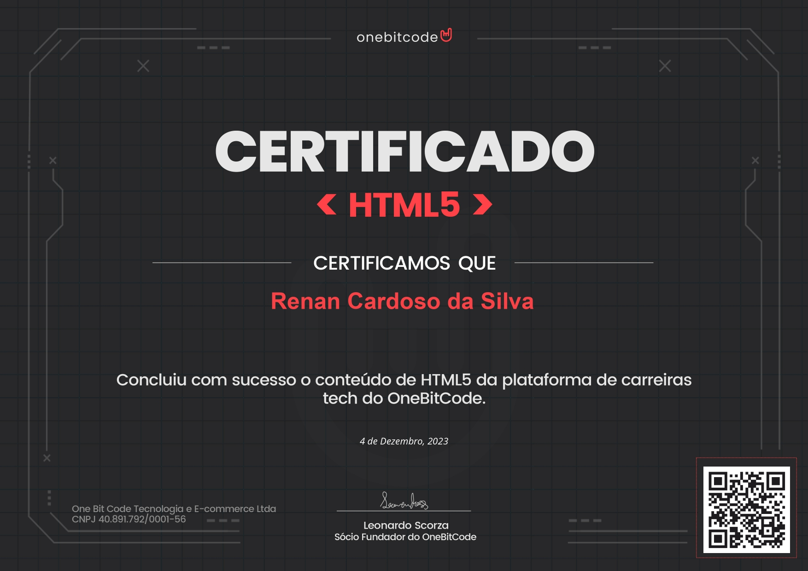
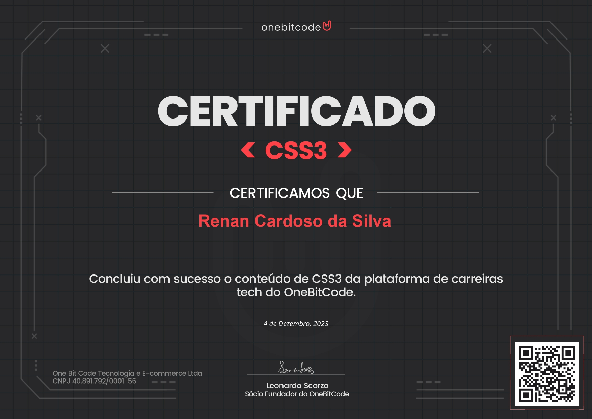

Desenvolvedor.Front-End
Como desenvolvedor front-end, meu principal objetivo é criar uma experiência agradável para o usuário. Estou aqui para ajudá-lo a transformar suas ideias em realidade e dar vida aos seus projetos!
 LinkedIn
LinkedIn
 Repositório
Repositório
 Download CV
Download CV

Meus Conhecimentos
.png)
HTML
 (1).png)
CSS
.png)
JavaScript

React
 1.png)
MySQL

Figma

UX

UI
Meus Certificados
- 
- 
-

-

Sobre Mim
Olá, meu nome é Renan e sou um apaixonado por tecnologia e inovação. Com 28 anos de idade, estou constantemente em busca de conhecimento para me aprimorar como profissional.
Atualmente, estou cursando Engenharia de Software, onde me dedico arduamente a projetos práticos com o objetivo de aprimorar minhas habilidades e me preparar para enfrentar novos desafios.
Minha trajetória anterior na área de arquitetura e design gráfico proporcionou-me uma perspectiva única, que me torna um profissional não apenas mais criativo, mas também mais preocupado com a estética e o design em tudo o que faço.